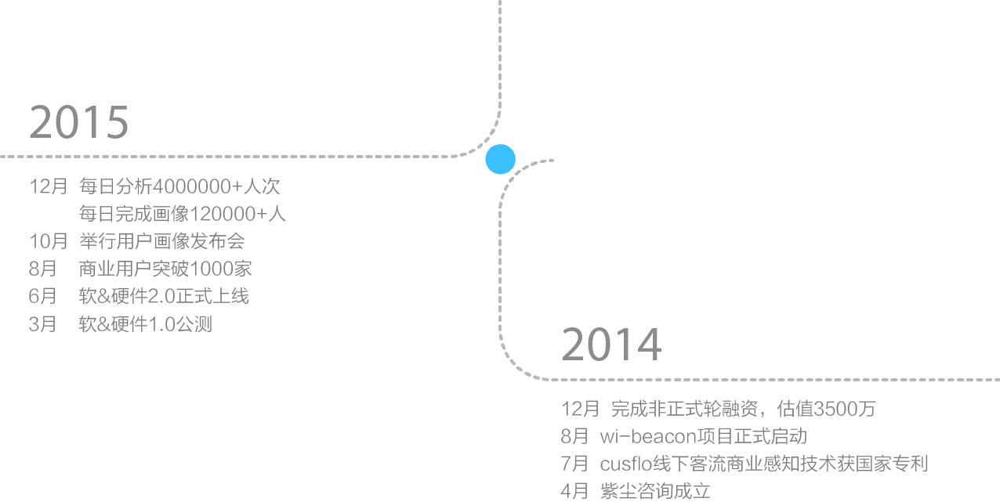

关于cusflo
cusflo是国内领先的线下客流感知服务。
是国内最早投入商业运行的、客流KPI体系最完整、唯一拥有相关专利的客流分析解决方案。
每一台wi-beacon均承载完整的cusflo客流服务。

紫尘咨询团队
紫尘咨询2014年成立于北大科技园，注册资本1500万元，是一家致力于利用互联网和大数据技术为实体商业提供精准客流研究的咨询公司。公司主要负责人毕业于北京大学、清华大学、中国传媒大学等高校，顾问团队来自戴德梁行、九洲远景、睿意德等国际国内顶级商业顾问机构，是国内最早开展实体客流精准分析的公司，也是国内客流分析领域唯一一家拥有国家专利的公司，国内客户已达数千家，公司在北京、郑州、济南、海口设有分公司。2015年，公司与百度等行业巨头建立战略合作伙伴关系，在行业内率先推出属地客群画像，光谱选址等一系列先进的大数据客流分析服务。
回归“匠心”从理解客户开始。我们坚信，任何商业成功的关键是了解客户并满足客户。我们致力于帮助我们的客户以前所未有的视角深入了解他们的客户，从而更好地满足他们。我们致力于传播尊重客观的世界观和“用客观数据说话”的方法论，用理性代替感性，用客观代替主观。
合作商户